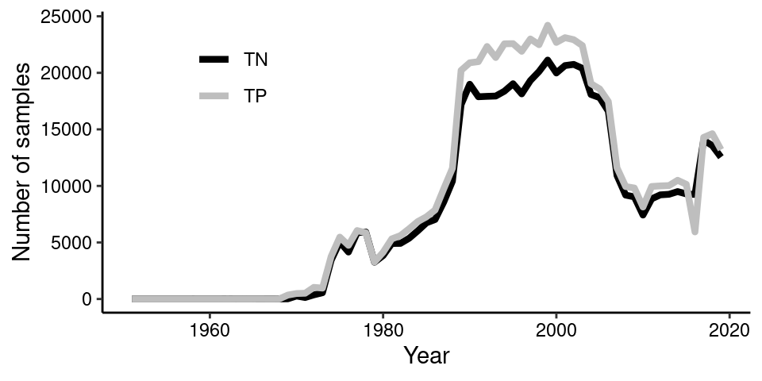
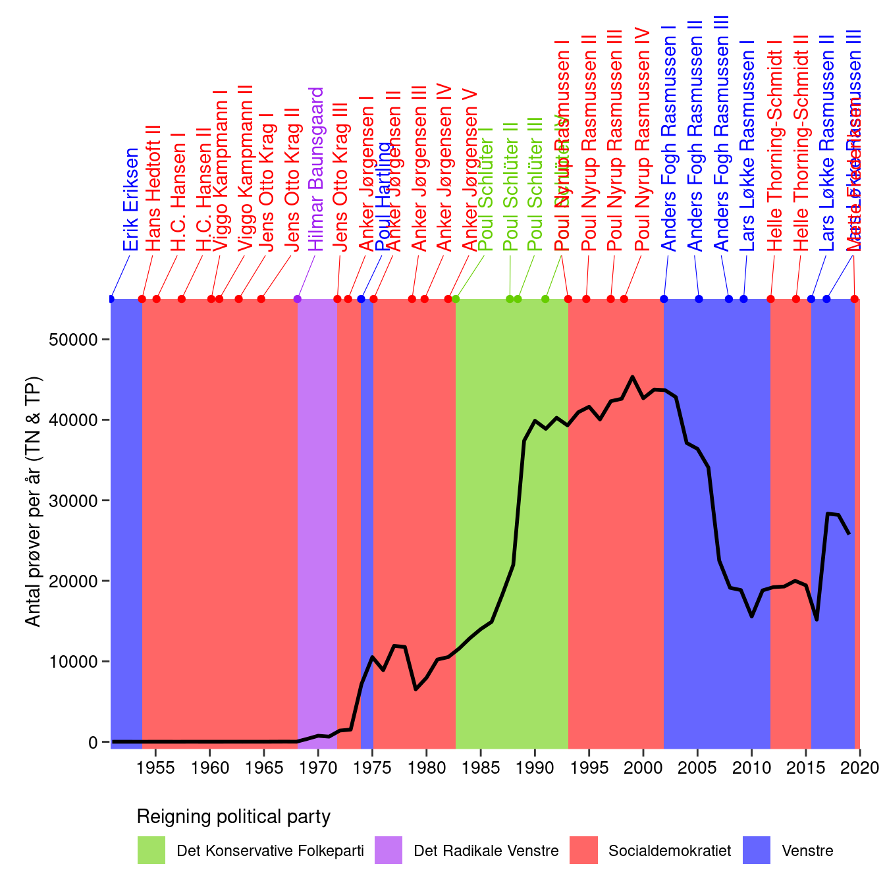

Monitoring of the aquatic environment is necessary to support proper management. The Environmental Protection Agency and Danish Centre For Environment And Energy are responsible for the large scale monitoring of the aquatic environment in Denmark. This covers lakes, streams, coastal habitats and more. Recent and historic monitoring data are publicly available from the surface water database ODA. This is an amazing initiative which I use extensively in my research.
Historic changes in monitoring effort
As part of another project, I had downloaded monitoring data from Denmark, Sweden and Finland. During the initial data exploration I plotted the number of samples over time in order to spot potential biases and was surprised. My expectation would be a relatively constant or increasing number of samples per year which was the case for Sweden and Finland. So I set out to investigate this further in a Danish context.
Getting the data into shape
I chose to download all observations of total phosphorus (TN) and nitrogen (TN) in lakes, streams and coastal waters. These variables are likely to be representative of the monitoring effort as they are the most commonly measured parameters and are key macro-nutrients in aquatic systems.
Data is downloaded from ODA and imported into R:
#Load libraries used for data munging and visualization
library(tidyverse);library(lubridate);library(rvest);library(zoo)
library(ggrepel);library(readxl);library(gganimate)
#Get files paths
files <- list.files(path_to_data, full.names = TRUE, pattern = "*.txt")
#Load data files for coastal, lakes and streams
ocean <- read_csv2(files[1])
lake <- read_csv2(files[2])
stream <- read_csv2(files[3])
#Do some data munging to get the three tables in a common format
#Added system variable and unique site_id
ocean_df <- ocean %>%
mutate(system = "ocean",
site_id = group_indices(., `MC-stationsnr`),
year = year(Dato),
Resultat = Resultat/1000) %>%
select(system, site_id, x_utm = ObsSted_X_UTM, y_utm = ObsSted_Y_UTM,
year, date = Dato, var = Parameter, value = Resultat)
lake_df <- lake %>%
mutate(system = "lake",
site_id = group_indices(., ObservationsStedNr),
date = ymd(Startdato),
year = year(date)) %>%
select(system, site_id, year, date,
x_utm = Xutm_Euref89_Zone32, y_utm = Yutm_Euref89_Zone32,
var = Parameter, value = Resultat)
stream_df <- stream %>%
mutate(system = "stream",
site_id = group_indices(., ObservationsStedNr),
date = ymd(Startdato),
year = year(date)) %>%
select(system, site_id, year, date,
x_utm = Xutm_Euref89_Zone32, y_utm = Yutm_Euref89_Zone32,
var = Parameter, value = Resultat)
#Combine tables and keep observations between 1950 and 2020
df <- bind_rows(ocean_df, lake_df, stream_df) %>%
mutate(var = ifelse(var %in% c("Nitrogen,total", "Nitrogen,total N"), "TN", "TP")) %>%
filter(between(date, ymd("1950-01-01"), ymd("2020-01-01")))
The data frame with all the observations has 1,183,334 observations: 397,480 from estuaries and oceans, 156,314 from lakes and 629,540 from streams. The count of samples by year for both TN and TP can quickly be visualized:
#Count number of TN and TP samples per year
sample_per_year <- df %>%
group_by(year, var) %>%
summarise(n = n()) %>%
mutate(date = ymd(paste0(year, " 01 01")))
#Plot both TN and TP versus time
sample_per_year %>%
ggplot(aes(year, n, col = var))+
scale_color_manual(values = c("TN" = "black", "TP" = "grey"))+
geom_line(size = 1.5)+
theme_classic()+
ylab("Number of samples")+
xlab("Year")+
theme(legend.title = element_blank(),
axis.text = element_text(color = "black"),
legend.position = c(0.2, 0.8))

Getting additional data
So the number of samples of both TN and TP, which follows each other closely, show periods of sudden increase and decrease. The first initiative started during the 1970’s when the aquatic environment received a lot of attention due to its poor state. This can be seen as green lakes and summer anoxia events in coastal waters. However, I suspected that politics might also play a role? Let’s do a tiny bit of web scraping and extract data from a wikipedia table describing the reigning political parties over time.
#Scrape wikipedia table
url <- 'https://da.wikipedia.org/wiki/Danmarks_regeringer'
#Read the html and extract table data
wiki_table <- url %>%
read_html() %>%
html_node('body #content .mw-parser-output table') %>%
html_table(fill = TRUE) %>%
tbl_df()
#Clean table before plotting
wiki_table_clean <- wiki_table %>%
mutate(date_start = as.Date(Fra, format = "%d. %B %Y")) %>%
filter(date_start > ymd("1950-01-01")) %>%
separate(`Parti(er)`, paste0("parti_", 1:5), sep = ",") %>%
select(-Fra, -Kaldenavn) %>%
mutate(date_end = lead(date_start, 1),
statsminister = gsub("Regeringen *", "", Regeringsnavn))
wiki_table_clean[33, "date_end"] <- ymd("2020-01-01")
The number of TN and TP samples versus reigning political party
Coloring the plot by the reigning political party should allow us to see potential patterns. Lets also sum the number of TN and TP samples each year as they are very similar.
#Summarise total number of samples (both TN and TP) by year
sample_per_year_total <- df %>%
group_by(year) %>%
summarise(n = n()) %>%
mutate(date = ymd(paste0(year, " 01 01")))
#Define party colors for figure
party_colors <- c("Venstre" = "blue", "Socialdemokratiet" = "red",
"Det Konservative Folkeparti" = "chartreuse3",
"Det Radikale Venstre" = "purple",
"TN" = "white", "TP" = "grey")
#Create figure and make animation
anim_plot <- ggplot()+
geom_rect(data = wiki_table_clean, inherit.aes = FALSE,
aes(xmin = date_start, xmax = date_end, ymin = -Inf, ymax = 50000,
fill = factor(parti_1)), alpha = 0.75)+
geom_line(data = sample_per_year_total, inherit.aes = FALSE,
aes(date, n), col = "black", size = 1.2)+
scale_fill_manual(values = party_colors, name = "Reigning political party")+
scale_x_date(breaks = seq(ymd("1955-01-01"), ymd("2020-01-01"), "5 years"),
date_labels = "%Y",
limits = c(ymd("1950-10-01"), ymd("2020-01-01")),
expand = c(0,0))+
ylab(NULL)+
ggtitle("Total number of samples (TN & TP)")+
xlab(NULL)+
scale_y_continuous(limits = c(0, 50000),
breaks = seq(0, 50000, 10000),
expand = c(0.01,0))+
guides(fill = guide_legend(title.position = "top"))+
theme_classic()+
theme(axis.line.y=element_blank(),
axis.text.y=element_text(colour = "black", size = 10),
axis.text.x=element_text(colour = "black", size = 10),
axis.line.x=element_blank(),
axis.ticks.length = unit(1.5, "mm"),
plot.margin = unit(c(0.2, 0.5, 0.2, 0.5), "cm"),
axis.title.y = element_text(hjust=0.25),
legend.position = "bottom")+
transition_reveal(date)
anim_save("gif_plot.gif", anim_plot, width = 500, height = 300)

What a different appearance! It appears that rapid rise in number of samples is occurring while the “Det Konservative Folkeparti” is reigning. This is a time with increasing focus on environmental issues where large scale initiatives are implemented to improve the poor condition of the aquatic environment. The later decrease is with the party “Venstre” in the lead where the effort to monitor the aquatic environment experienced a drastic fall. This is even before the financial crisis during 2007/2008 set in. An obvious next step could be to retrieve and plot the same data from Sweden for example where monitoring data are also readily available. Anyhow, for Denmark it will be interesting to see how the trend develops in the future. Will the environmental monitoring effort and the number of TN and TP samples reach the heights of previous years?
Bonus plot: Adding events and annotations
Further information from the scraped table can also be added, such as the prime minister. Also, I have added some interesting events along the timeline but they may not make sense for non-Danish people.
#Create table with events and date
events <- tribble(~date, ~label,
"11-10-1971", "Miljøministeriet oprettes",
"01-06-1973", "Miljølov",
"08-10-1986", "Døde hummere",
"04-06-1987", "Vandmiljøplan",
"01-06-2003", "Ikke en fugl, ikke en fisk, ikke en frø",
"01-06-2008", "Finanskrisen") %>%
mutate(date = dmy(date)) %>%
add_column(n = c(1000, 3000, 17000, 20000, 40000, 19000))
#Create y-coordinates for the events using linear interpolation
events_interp_ypos <- sample_per_year_total %>%
right_join(data.frame(date=seq(ymd("1951-01-01"), ymd("2020-01-01"), "1 day"))) %>%
mutate(n_interp = na.approx(n, na.rm = FALSE)) %>%
select(date, n_interp) %>%
right_join(events)
ggplot()+
geom_rect(data = wiki_table_clean, inherit.aes = FALSE,
aes(xmin = date_start, xmax = date_end, ymin = -Inf, ymax = 55000,
fill = factor(parti_1)), alpha = 0.6)+
geom_line(data = sample_per_year_total, inherit.aes = FALSE,
aes(date, n), col = "black", size = 1)+
geom_point(data = wiki_table_clean, inherit.aes = FALSE,
aes(x = date_start, y = 55000, col = factor(parti_1)),
show.legend = FALSE)+
geom_text_repel(data = wiki_table_clean,
aes(x = date_start, y = 55000,
label = statsminister, col = factor(parti_1)),
direction = "x", angle = 90, vjust = 1, segment.size = 0.2,
nudge_y = 5000, show.legend = FALSE)+
scale_fill_manual(values = party_colors, name = "Reigning political party")+
scale_color_manual(values = party_colors)+
scale_x_date(breaks = seq(ymd("1955-01-01"), ymd("2020-01-01"), "5 years"),
date_labels = "%Y",
limits = c(ymd("1950-10-01"), ymd("2020-01-01")),
expand = c(0,0))+
ylab("Antal prøver per år (TN & TP)")+
xlab(NULL)+
scale_y_continuous(limits = c(0, 90000), breaks = seq(0, 55000, 10000),
expand = c(0.01,0))+
guides(fill = guide_legend(title.position = "top"))+
theme_classic()+
geom_label_repel(data = events_interp_ypos, aes(date, n_interp, label = label),
min.segment.length = 0, segment.colour = "black",
nudge_x = -3000, nudge_y = 9000)+
geom_point(data = events_interp_ypos, aes(date, n_interp), col = "black", size = 2)+
theme(axis.line.y=element_blank(),
axis.text.y=element_text(colour = "black", size = 10),
axis.text.x=element_text(colour = "black", size = 10),
axis.line.x=element_blank(),
axis.ticks.length = unit(1.5, "mm"),
plot.margin = unit(c(0.2, 0.5, 0.2, 0.5), "cm"),
axis.title.y = element_text(hjust=0.25),
legend.position = "bottom")
